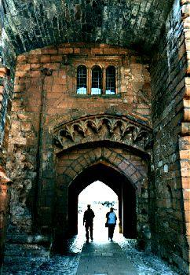

Carlisle Yetts
La Porte de Carlisle
Ascribed by Hogg to Allan Cunningham
- from Cromek's "Remains of Nithsdale and Galloway Song", page 159, 1810- Hogg's "Jacobite Relics" 2nd Series N°103, page 198, 1821
- and Allan Cunningham's "Traditional Tales of the English and Scottish Peasantry", page 72, first published in 1822
and in his "Songs of Scotland", volume III, page 214, 1825.
Tune - Mélodie
"Lady Keith's Lament"
Sequenced by Christian Souchon

Carlisle Castle Gate
|
To the tune:
According to Hogg: "For the air, see vol I. Song 27" ( Lady Keith's Lament ). But judging by the lyrics, the tune could be "Sweet is the rose" , as well. As to the ascription of the lyrics: 1° R.H. Cromek who first published the poem writes explicitely that it was contributed to him by Mrs Copland of Dalbeattie in Galloway who is, with her niece, Miss McCartney and Mr Allan Cunningham of Dumfries, one of the 3 persons "whose ready assistance [he] received while collecting the materials" . He states in a note to it: "I do not think it to have been the composition of a woman. The mild composure of the female heart would have shrunk back from such gory and harrowing delineation. I rather think it to have been written by some of the infortunate adherents of the Prince, when lurking from wood to hill, amid all the horrors of proscription." On page XXX of the introduction to his collection, Cromek makes an interesting remark concerning Allan Cunningham: "He entered into my design with the enthusiasm of a poet and was my guide through the rural haunts of Nithsdale and Galloway...His indefatigable industry drew from obscurity many pieces which adorn this collection..." 2° Hogg however notes: "Is from Cromek ; and if it is not Allan Cunninghame's, is very like his style" . Very likely, Hogg is right, at least partly. Cunningham gives a slightly different and longer text in his "Traditional Tales of the English and Scottish Peasantry", page 72, 1822, where this poem and many others, mostly composed by himself, are interspersed within a long tale, "The Selbys of Cumberland", that is by no means traditional, but, rather evidently, of his own invention. Cunningham concludes his story: "Such was the story of Eleanor Selby. In a later day some unknown Scottish minstrel heard the uncertain and varying tradition, and, with a minstrel's licence, wove it into verse, suppressing the name of Selby and giving the whole a colour and character most vehemently Scottish. A northern lady is made to sing the following rude and simple lament..." |
A propos de la mélodie:
Selon Hogg: "Pour la mélodie, voir vol I. Song 27" ( Lady Keith's Lament ). En fait, à en juger par les paroles, la mélodie pourrait être aussi bien "Sweet is the rose" . Attribution du texte: 1° R.H. Cromek qui fut le premier à publier ce texte mentionne clairement qu'il lui a été communiqué par Mme Copland de Daldeattie en Galloway qui est avec sa nièce, Melle McCartney et M. Allan Cunningham de Dumfries, l'une des trois personnes " dont j'ai reçu l'assistance zélée lors de la collecte des matériaux". Il indique dans une note: "Je ne pense pas que ce soit l'œuvre d'une femme. Les dispositions naturelles d'un cœur féminin lui auraient interdit ces descriptions sanglantes et déchirantes. je pencherais plutôt pour quelque malheureux partisan du Prince obligé de vivre dans la clandestinité pour fuir les horreurs de la répression." A la page XXX de l'introduction à son recueil, Cromek fait une intéressante remarque à propos de Cunningham: "Il a adhéré à mon projet avec l'enthousiasme d'un poète et il a été mon guide dans les campagnes de Nithsdale et de Galloway... Son activité incessante a permis de tirer de l'obscurité bien des morceaux qui sont les joyaux de cette collection..." 2° Hogg, quant à lui, déclare: Tiré de Cromek. Et si ce n'est pas une composition d'Allan Cunningham, cela ressemble fort à son style". Il semble bien que Hogg soit dans le vrai, du moins en partie. Cunningham a publié dans ses "Contes traditionnels des paysans d'Angleterre et d'Ecosse", page 72, en 1822 un texte à peine différent et un peu plus long. Il est inséré avec plusieurs autres poèmes de sa composition dans une longue histoire "Les Selby de Cumberland", laquelle doit peu à la tradition, mais, semble-t-il, beaucoup à l'auteur. Cunningham termine ainsi son récit: "Telle était l'histoire d'Eléonore Selby. Plus tard quelque ménestrel écossais inconnu eut vent de cette mouvante tradition et, usant des libertés qu'autorisait son art, en fit des vers d'où était écarté le nom de Selby et donna à son poème une teinte et un caractère écossais très affirmés. On fait chanter à une dame du "Nord" la rude et simple complainte qui suit..." |

|
CARLISLE YETTS [1]
A fragment 1. White was the rose in his gay bonnet, As he faulded me in his broached plaidie ; His hand, whilk clasped the truth o' lure, O it was aye in battle readie ! (twice) 1a. His lang lang hair, in yellow hanks, Wav'd o'er his cheeks sae sweet and ruddie; But now they wave o'er Carlisle yetts, In dripping ringlets clotting bloodie. [2] (twice) 2. My father's blood's in that flower tap, My brother's in that harebell's blossom ; This white rose was steeped in my luve's blood, And I'll aye wear it in my bosom. [3] **** 3. When I came first by merrie Carlisle, Was ne'er a town sae sweetly seeming; The white rose flaunted owre the wall, The thristled banners far were streaming. 4. When I came next by merrie Carlisle, O sad sad seem'd the town, and eerie! The auld auld men came out and wept: " O maiden, come ye to seek your dearie ?" **** 5. There's ae drap o' blood atween my breasts, And twa in my links o' hair sae yellow; The tane I'll ne'er wash, and the tither ne'er kame, But I'll sit and pray aneath the willow. 5a. Wae, wae, upon that cruel heart, Wae, wae, upon that hand sae bloodie, Which feasts on our richest Scottish blood, And makes sae mony a dolefu' widow! Source: "The remains of Nithsdale and Galloway Song", page 160, 1820. The "Jacobite Relics" version is almost identical. |
CARLISLE YETTS.
I. White was the rose in my love's hat, As he rowed me in his lowland plaidie; His heart was true as death in love, His hand was aye in battle ready. II. His long, long hair, in yellow hanks, Waved o'er his cheeks sae sweet and ruddy; But now it waves o'er Carlisle yetts, In dripping ringlets, soil'd and bloody. III. When I came first through fair Carlisle, Ne'er was a town sae gladsome seeming; The white rose flaunted o'er the wall, The thistled pennons wide were streaming. IV. When I came next through fair Carlisle, O sad, sad seem'd the town and eerie ! The old men sobb'd, and gray dames wept, O lady! come ye to seek your dearie? VII. There's a tress of soil'd and yellow hair Close in my bosom I am keeping— Now I have done with delight and love, And welcome woe, and want, and weeping. VIII. Woe, woe upon that cruel heart, Woe, woe upon that hand sae bloody, That lordless leaves my true love's hall, And makes me wail a virgin widow! V. I tarried on a heathery hill, My tresses to my cheeks were frozen; And far adown the midnight wind I heard the din of battle closing. VI. The gray day dawned—amang the snow Lay many a young and gallant fellow; And O! the sun shone bright in vain, On twa blue een 'tween locks of yellow. Source: "Songs of Scotland, Ancient and Modern" collected by Allan Cunningham, page 214, 1826. |
LES PORTES DE CARLISLE [1]
1. Son bonnet portait la rose blanche, Lorsqu'il me tenait enveloppée dans son plaid. (Quand il menait la barque vêtu de son plaid) Son bras tranchait le vrai de l'apparence (Son cœur aimant était plein de constance) Et pour le combat il était toujours prêt! (bis) 1a. Ses cheveux dorés formaient la cascade Encadrant son charmant visage moqueur. Ils pendent aux portes de Carlisle Et sont tout ruisselants de sang et d'horreur. [2] (bis) 2. Cette fleur but le sang de mon père. Du sang de mon frère la rose s'abreuva. Le sang de mon aimé la désaltère Et je veux à jamais la porter sur moi. [3] **** 3. Dans l'accorte Carlisle naguère J'étais venue. Que son aspect était charmant! La Rose blanche agrémentait ses pierres L'Etendard aux Chardons flottait fièrement. 4. Quand je suis à Carlisle revenue, Elle n'était que deuil et désolation Et des vieillards d'une voix émue: Me demandaient: "Cherches-tu ton compagnon?" **** 5. Une goutte de sang sur ma poitrine Et deux autres brillent sur mes cheveux dorés: Jamais, jamais je ne laverai l'une, Et les autres jamais je ne peignerai. VII. Une mèche de chevelure blonde Souillée de sang repose à présent sur mon sein. C'en est fini des plaisirs de ce monde L'heure est venue de m'adonner au chagrin. 5a. J'irai m'asseoir pour prier sous le saule Et je maudirai la main ensanglantée Qui les meilleurs de l'Ecosse immole Et fait des filles des veuves éplorées! V. J'allai m'asseoir là-haut sur la colline, Sur mes joues mes boucles par le givre collées. On entendait mugir le vent nocturne Et les dernières armes entrechoquées. VI. Puis vint l'aube d'un jour gris où la neige Recouvrait les corps de maints jeunes héros. La lueur du soleil était vaine Dans les yeux de la tête blonde, là-haut! (Trad. Christian Souchon (c) 2010) |
|
[1] Carlisle was occupied by the Jacobites on 15th November 1745 but was than besieged by Cumberland and after resisting for nine days surrendered to him on 30th December. The prisoners were treated extremely badly. (see
Loch Lomond
).
[2] Severing the heads of rebels and fixing them at conspicuous places were practised throughout the kingdom (see Towly's Ghost ). [3] This poem is a curious mix of active reality, feminine grief and ideological imagery. |
[1] Carlisle fut occupé par les Jacobites le 15 novembre 1745 mais assiégé ensuite par Cumberland et se rendit, après une résistance de neuf jours, le 30 décembre. Les prisonniers furent extrêmements mal traités. (Cf.
Loch Lomond
).
[2] La décapitation des rebelles et l'exposition de leurs têtes furent pratiquées dans tout le royaume (Cf. Towly's Ghost ). [3] Ce poème est un étrange mélange d'action réelle, de sentiments féminins et d'images idéologiques. |
|
|
|